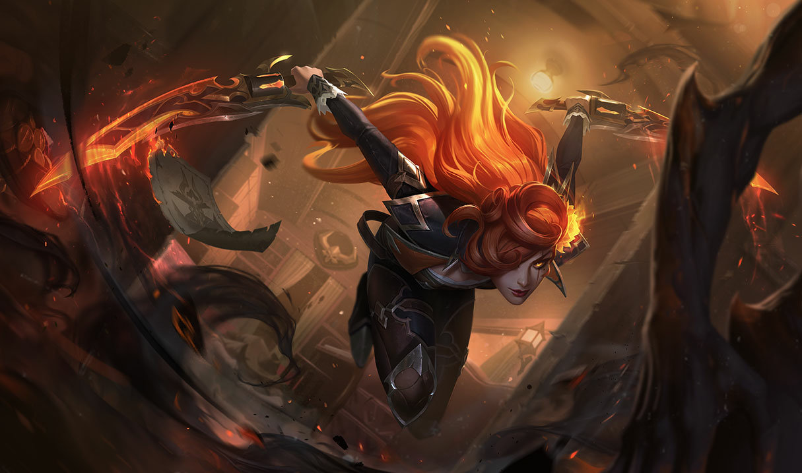

About Katarina
Decisive in judgment and lethal in combat, Katarina is a Noxian assassin of the highest caliber. Eldest daughter to the legendary General Du Couteau, she made her talents known with swift kills against unsuspecting enemies. Her fiery ambition has driven her to pursue heavily guarded targets, even at the risk of endangering her allies—but no matter the mission, Katarina will not hesitate to execute her duty amid a whirlwind of serrated daggers.
Katarina and her allies
Katarina's Characteristics
- She is a midlaner
- She is from Noxia
- She is an amazing assasin
Katarina's allies
Katarina has allies from Noxia. She looks up to Darius and Draven. They are brothers and is a part of the Noxian army. Click on the links below to read more about them.